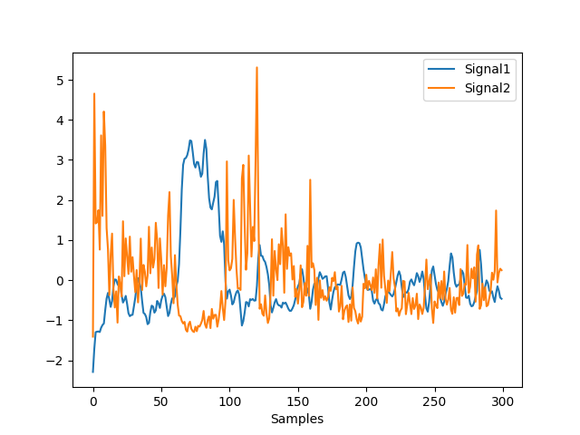
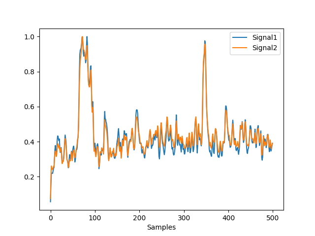
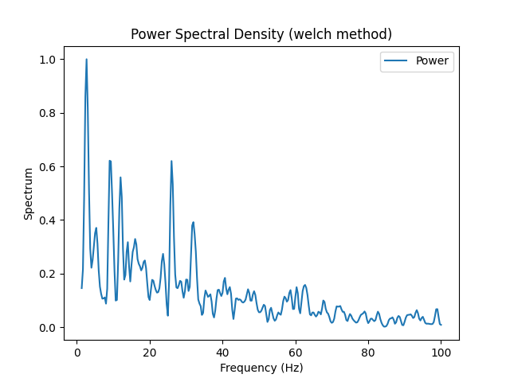

EEG#
Features#
eeg_badchannels()#
- eeg_badchannels(eeg, bad_threshold=0.5, distance_threshold=0.99, show=False)[source]#
Find bad channels
Find bad channels among the EEG channels.
- Parameters:
eeg (np.ndarray) – An array (channels, times) of M/EEG data or a Raw or Epochs object from MNE.
bad_threshold (float) – The proportion of indices (for instance, the mean, the SD, the skewness, the kurtosis, etc.) on which an observation is considered an outlier to be considered as bad. The default, 0.5, means that a channel must score as an outlier on half or more of the indices.
distance_threshold (float) – The quantile that defines the absolute distance from the mean, i.e., the z-score for a value of a variable to be considered an outlier. For instance, .975 becomes
scipy.stats.norm.ppf(.975) ~= 1.96. The default value (.99) means that all observations beyond 2.33 SD from the mean will be classified as outliers.show (bool) – Visualize individual EEG channels with highlighted bad channels. Defaults to False
- Returns:
list – List of bad channel names
DataFrame – Information of each channel, such as standard deviation (SD), mean, median absolute deviation (MAD), skewness, kurtosis, amplitude, highest density intervals, number of zero crossings.
Examples
In [1]: import neurokit2 as nk In [2]: eeg = nk.mne_data("filt-0-40_raw") In [3]: bads, info = nk.eeg_badchannels(eeg, distance_threshold=0.95, show=False)
eeg_diss()#
- eeg_diss(eeg, gfp=None, **kwargs)[source]#
Global dissimilarity (DISS)
Global dissimilarity (DISS) is an index of configuration differences between two electric fields, independent of their strength. Like GFP, DISS was first introduced by Lehmann and Skrandies (1980). This parameter equals the square root of the mean of the squared differences between the potentials measured at each electrode (versus the average reference), each of which is first scaled to unitary strength by dividing by the instantaneous GFP.
- Parameters:
eeg (np.ndarray) – An array (channels, times) of M/EEG data or a Raw or Epochs object from MNE.
gfp (list) – The Global Field Power (GFP). If
None, will be obtained viaeeg_gfp().**kwargs – Optional arguments to be passed into
nk.eeg_gfp().
- Returns:
np.ndarray – DISS of each sample point in the data.
Examples
In [1]: import neurokit2 as nk In [2]: eeg = nk.mne_data("filt-0-40_raw") In [3]: eeg = eeg.set_eeg_reference('average') EEG channel type selected for re-referencing Applying average reference. Applying a custom ('EEG',) reference. Removing existing average EEG reference projection. In [4]: gfp = nk.eeg_gfp(eeg) In [5]: diss = nk.eeg_diss(eeg, gfp=gfp) In [6]: nk.signal_plot([gfp[0:300], diss[0:300]], standardize=True)
References
Lehmann, D., & Skrandies, W. (1980). Reference-free identification of components of checkerboard-evoked multichannel potential fields. Electroencephalography and clinical neurophysiology, 48(6), 609-621.
{kind=link}
eeg_gfp()#
- eeg_gfp(eeg, sampling_rate=None, method='l1', normalize=False, smooth=0, robust=False, standardize_eeg=False)[source]#
Global Field Power (GFP)
Global Field Power (GFP) constitutes a reference-independent measure of response strength. GFP was first introduced by Lehmann and Skrandies (1980) and has since become a commonplace measure among M/EEG users. Mathematically, GFP is the standard deviation of all electrodes at a given time.
- Parameters:
eeg (array) – An array (channels, times) of M/EEG data or a Raw or Epochs object from MNE.
sampling_rate (int) – The sampling frequency of the signal (in Hz, i.e., samples/second). Only necessary if smoothing is requested.
method (str) – Can be either
l1orl2to use the L1 or L2 norm.normalize (bool) – Normalize GFP.
smooth (float) – Can be either
Noneor a float. If a float, will use this value, multiplied by the sampling rate.robust (bool) – If
True, the GFP extraction (and the data standardization if requested) will be done using the median/MAD instead of the mean/SD.standardize_eeg (bool) – Standardize (z-score) the data across time prior to GFP extraction using
nk.standardize().
- Returns:
gfp (array) – The global field power of each sample point in the data.
Examples
In [1]: import neurokit2 as nk In [2]: eeg = nk.mne_data("filt-0-40_raw") In [3]: eeg = nk.eeg_rereference(eeg, 'average') In [4]: eeg = eeg.get_data()[:, 0:500] # Get the 500 first data points
Example 1: Compare L1 and L2 norms
In [5]: l1 = nk.eeg_gfp(eeg, method="l1", normalize=True) In [6]: l2 = nk.eeg_gfp(eeg, method="l2", normalize=True) In [7]: nk.signal_plot([l1, l2])
Example 2: Compare Mean-based and Median-based
In [8]: gfp = nk.eeg_gfp(eeg, normalize=True) In [9]: gfp_r = nk.eeg_gfp(eeg, normalize=True, robust=True) In [10]: nk.signal_plot([gfp, gfp_r])

Example 3: Standardize the data
In [11]: gfp = nk.eeg_gfp(eeg, normalize=True) In [12]: gfp_z = nk.eeg_gfp(eeg, normalize=True, standardize_eeg=True) In [13]: nk.signal_plot([gfp, gfp_z])
References
Lehmann, D., & Skrandies, W. (1980). Reference-free identification of components of checkerboard-evoked multichannel potential fields. Electroencephalography and clinical neurophysiology, 48(6), 609-621.
{kind=link}
{kind=link}
eeg_power()#
- eeg_power(eeg, sampling_rate=None, frequency_band=['Gamma', 'Beta', 'Alpha', 'Theta', 'Delta'], **kwargs)[source]#
EEG Power in Different Frequency Bands
See our walkthrough for details.
Gamma (30-80 Hz)
Beta (13-30 Hz) * Beta 1 (13-16 Hz) * Beta 2 (16-20 Hz) * Beta 3 (20-30 Hz)
SMR (13-15 Hz)
Alpha (8-13 Hz)
Mu (9-11 Hz)
Theta (4-8 Hz)
Delta (1-4 Hz)
- Parameters:
eeg (array) – An array (channels, times) of M/EEG data or a Raw or Epochs object from MNE.
sampling_rate (int) – The sampling frequency of the signal (in Hz, i.e., samples/second). Only necessary if smoothing is requested.
frequency_band (list) – A list of frequency bands (or tuples of frequencies).
**kwargs – Other arguments to be passed to
nk.signal_power().
- Returns:
pd.DataFrame – The power in different frequency bands for each channel.
Examples
In [1]: import neurokit2 as nk # Raw objects In [2]: eeg = nk.mne_data("raw") In [3]: by_channel = nk.eeg_power(eeg) In [4]: by_channel.head() Out[4]: Channel Gamma Beta Alpha Theta Delta 0 EEG 001 0.007912 0.003845 0.001344 0.005561 0.027990 1 EEG 002 0.003008 0.001429 0.001318 0.005474 0.025051 2 EEG 003 0.002763 0.001745 0.001449 0.006438 0.029593 3 EEG 004 0.009794 0.004741 0.001129 0.002785 0.013515 4 EEG 005 0.004743 0.002953 0.002069 0.005958 0.020404 In [5]: average = by_channel.mean(numeric_only=True, axis=0) In [6]: average["Gamma"] Out[6]: 0.005154868723667879
References
Lehmann, D., & Skrandies, W. (1980). Reference-free identification of components of checkerboard-evoked multichannel potential fields. Electroencephalography and clinical neurophysiology, 48(6), 609-621.
eeg_rereference()#
- eeg_rereference(eeg, reference='average', robust=False, **kwargs)[source]#
EEG Rereferencing
This function can be used for arrays as well as MNE objects.
EEG recordings measure differences in electrical potentials between two points, which means the signal displayed at any channel is in fact the difference in electrical potential to some other recording site. Primarily, this other recording site is the ground electrode, which picks up electrical noise that does not reach the other scalp electrodes. Consequently, the voltage difference between ground and EEG scalp electrodes is also affected by this noise.
The idea behind re-referencing is to express the voltage at the EEG scalp channels with respect to another, new reference. It can be composed of any recorded channel or an average of several channels.
- Parameters:
eeg (np.ndarray) – An array (channels, times) of M/EEG data or a Raw or Epochs object from MNE.
reference (str) – See
mne.set_eeg_reference(). Can be a string (e.g., ‘average’, ‘lap’ for Laplacian “reference-free” transformation, i.e., CSD), or a list (e.g., [‘TP9’, ‘TP10’] for mastoid reference).robust (bool) – Only applied if reference is
average. IfTrue, will substract the median instead of the mean.**kwargs – Optional arguments to be passed into
mne.set_eeg_rereference().
- Returns:
object – The rereferenced raw mne object.
Examples
In [1]: import neurokit2 as nk In [2]: raw = nk.mne_data("filt-0-40_raw") In [3]: eeg = raw.get_data()
Example 1: Difference between robust average
In [4]: avg = nk.eeg_rereference(eeg, 'average', robust=False) In [5]: avg_r = nk.eeg_rereference(eeg, 'average', robust=True) In [6]: nk.signal_plot([avg[0, 0:1000], avg_r[0, 0:1000]], labels=["Normal", "Robust"])
Example 2: Compare the rereferencing of an array vs. the MNE object
In [7]: avg_mne = raw.copy().set_eeg_reference('average', verbose=False) In [8]: nk.signal_plot([avg[0, 0:1000], avg_mne.get_data()[0, 0:1000]])

Example 3: Difference between average and LAP
In [9]: lap = nk.eeg_rereference(raw, 'lap') In [10]: nk.signal_plot( ....: [avg_mne.get_data()[0, 0:1000], lap.get_data()[0, 0:1000]], ....: standardize=True ....: ) ....:
References
Trujillo, L. T., Stanfield, C. T., & Vela, R. D. (2017). The effect of electroencephalogram (EEG) reference choice on information-theoretic measures of the complexity and integration of EEG signals. Frontiers in Neuroscience, 11, 425.
{kind=link}
{kind=link}
eeg_source()#
- eeg_source(raw, src, bem, method='sLORETA', show=False, verbose='WARNING', **kwargs)[source]#
Source Reconstruction for EEG data
Currently only for mne.Raw objects.
- Parameters:
raw (mne.io.Raw) – Raw EEG data.
src (mne.SourceSpace) – Source space. See
mne_templateMRI()to obtain it from an MRI template.bem (mne.Bem) – BEM model. See
mne_templateMRI()to obtain it from an MRI template.method (str) – Can be
"sLORETA","MNE"or"dSPM". Seemne.minimum_norm.apply_inverse_raw().show (bool) – If
True, shows the location of the electrodes on the head. Seemne.viz.plot_alignment().verbose (str) – Verbosity level for MNE.
**kwargs – Other arguments to be passed to
mne.make_forward_solution()andmne.minimum_norm.make_inverse_operator()andmne.minimum_norm.apply_inverse_raw().
See also
eeg_source_extract()#
- eeg_source_extract(stc, src, segmentation='PALS_B12_Lobes', verbose='WARNING', **kwargs)[source]#
Extract the activity from an anatomical source
Returns a dataframe with the activity from each source in the segmentation.
Parcellation models include: * ‘aparc’ * ‘aparc.a2005s’ * ‘aparc.a2009s’ * ‘oasis.chubs’ * ‘PALS_B12_Brodmann’ * ‘PALS_B12_Lobes’ * ‘PALS_B12_OrbitoFrontal’ * ‘PALS_B12_Visuotopic’ * ‘Yeo2011_17Networks_N1000’ * ‘Yeo2011_7Networks_N1000’
- Parameters:
stc (mne.SourceEstimate) – An SourceEstimate object as obtained by
eeg_source().src (mne.SourceSpaces) – An SourceSpaces object as obtained by
eeg_source().segmentation (str) – See above.
verbose (str) – Verbosity level for MNE.
**kwargs – Other arguments to be passed to
mne.extract_label_time_course().
Examples
In [1]: import neurokit2 as nk In [2]: raw = nk.mne_data("filt-0-40_raw") In [3]: src, bem = nk.mne_templateMRI() In [4]: stc, src = nk.eeg_source(raw, src, bem) In [5]: data = nk.eeg_source_extract(stc, src, segmentation="PALS_B12_Lobes") In [6]: data.head()
MNE-Utilities#
mne_data()#
- mne_data(what='raw', path=None)[source]#
Access MNE Datasets
Utility function to easily access MNE datasets.
- Parameters:
what (str) – Can be
"raw"or"filt-0-40_raw"(a filtered version).path (str) – Defaults to
None, assuming that the MNE data folder already exists. If not, specify the directory to download the folder.
- Returns:
object – The raw mne object.
Examples
In [1]: import neurokit2 as nk In [2]: raw = nk.mne_data(what="raw") In [3]: raw = nk.mne_data(what="epochs")
mne_to_df()#
- mne_to_df(eeg)[source]#
Conversion from MNE to dataframes
Convert MNE objects to dataframe or dict of dataframes.
- Parameters:
eeg (Union[mne.io.Raw, mne.Epochs]) – Raw or Epochs M/EEG data from MNE.
See also
- Returns:
DataFrame – A DataFrame containing all epochs identifiable by the
"Epoch"column, which time axis is stored in the"Time"column.
Examples
Raw objects
In [1]: import neurokit2 as nk # Download MNE Raw object In [2]: eeg = nk.mne_data("filt-0-40_raw") In [3]: nk.mne_to_df(eeg) Out[3]: Time EEG 001 EEG 002 ... EEG 058 EEG 059 EEG 060 0 0.000000 -4.276182 -0.614833 ... 0.172054 0.142613 0.177187 1 0.006660 -13.719613 -2.243887 ... 0.598532 -0.210385 0.867487 2 0.013320 -14.106715 -1.705863 ... 2.516463 0.738738 3.247686 3 0.019980 -11.129011 0.357117 ... 4.067970 1.712777 4.825973 4 0.026639 -14.703818 2.077917 ... 4.015080 1.821963 3.875845 ... ... ... ... ... ... ... ... 41695 277.682047 34.466499 56.709267 ... 17.592953 19.040349 6.905037 41696 277.688707 26.214251 52.595785 ... 18.241601 21.146145 9.016836 41697 277.695367 19.576043 44.539640 ... 20.342592 23.406952 12.009144 41698 277.702027 17.385905 35.788460 ... 24.164947 26.420318 16.159330 41699 277.708686 16.283964 31.688199 ... 27.597833 28.958848 20.147470 [41700 rows x 60 columns]
Epoch objects
# Download MNE Epochs object In [4]: eeg = nk.mne_data("epochs") In [5]: nk.mne_to_df(eeg) Out[5]: Time Condition Epoch ... EEG 058 EEG 059 EEG 060 0 -0.199795 audio/right 0 ... -0.252893 -2.647777 -0.990753 1 -0.193135 audio/right 0 ... -1.866898 -2.966418 -1.344063 2 -0.186476 audio/right 0 ... -0.085722 -0.845712 0.242641 3 -0.179816 audio/right 0 ... 2.890358 1.223851 2.005156 4 -0.173156 audio/right 0 ... 3.853468 1.556440 2.389586 ... ... ... ... ... ... ... ... 30523 0.472849 visual/right 317 ... 3.417263 0.898245 4.373624 30524 0.479509 visual/right 317 ... 3.311567 1.424799 5.198189 30525 0.486168 visual/right 317 ... 1.874429 0.310056 4.958517 30526 0.492828 visual/right 317 ... 0.135185 -1.766825 3.130921 30527 0.499488 visual/right 317 ... 0.199427 -2.366780 2.027200 [30528 rows x 62 columns]
Evoked objects
# Download MNE Evoked object In [6]: eeg = nk.mne_data("evoked") In [7]: nk.mne_to_df(eeg) Out[7]: Time Condition ... EEG 059 EEG 060 0 -0.199795 0.50 × audio/left + 0.50 × audio/right ... 0.072215 0.376835 1 -0.193135 0.50 × audio/left + 0.50 × audio/right ... 0.133655 0.524040 2 -0.186476 0.50 × audio/left + 0.50 × audio/right ... 0.259057 0.635795 3 -0.179816 0.50 × audio/left + 0.50 × audio/right ... 0.432169 0.716484 4 -0.173156 0.50 × audio/left + 0.50 × audio/right ... 0.612105 0.806934 .. ... ... ... ... ... 101 0.472849 0.51 × visual/left + 0.49 × visual/right ... 2.130764 1.961003 102 0.479509 0.51 × visual/left + 0.49 × visual/right ... 2.466693 2.076868 103 0.486168 0.51 × visual/left + 0.49 × visual/right ... 2.796296 2.274223 104 0.492828 0.51 × visual/left + 0.49 × visual/right ... 2.983311 2.395821 105 0.499488 0.51 × visual/left + 0.49 × visual/right ... 3.122418 2.414186 [212 rows x 61 columns]
mne_channel_add()#
- mne_channel_add(raw, channel, channel_type=None, channel_name=None, sync_index_raw=0, sync_index_channel=0)[source]#
Add channel as array to MNE
Add a channel to a mne’s Raw m/eeg file. It will basically synchronize the channel to the eeg data following a particular index and add it.
- Parameters:
raw (mne.io.Raw) – Raw EEG data from MNE.
channel (list or array) – The signal to be added.
channel_type (str) – Channel type. Currently supported fields are ‘ecg’, ‘bio’, ‘stim’, ‘eog’, ‘misc’, ‘seeg’, ‘ecog’, ‘mag’, ‘eeg’, ‘ref_meg’, ‘grad’, ‘emg’, ‘hbr’ or ‘hbo’.
channel_name (str) – Desired channel name.
sync_index_raw (int or list) – An index (e.g., the onset of the same event marked in the same signal), in the raw data, by which to align the two inputs. This can be used in case the EEG data and the channel to add do not have the same onsets and must be aligned through some common event.
sync_index_channel (int or list) – An index (e.g., the onset of the same event marked in the same signal), in the channel to add, by which to align the two inputs. This can be used in case the EEG data and the channel to add do not have the same onsets and must be aligned through some common event.
- Returns:
mne.io.Raw – Raw data in FIF format.
Example
In [1]: import neurokit2 as nk In [2]: import mne In [3]: raw = nk.mne_data("filt-0-40_raw") In [4]: ecg = nk.ecg_simulate(length=50000) # Let the 42nd sample point in the EEG signal correspond to the 333rd point in the ECG In [5]: event_index_in_eeg = 42 In [6]: event_index_in_ecg = 333 In [7]: raw = nk.mne_channel_add(raw, ...: ecg, ...: sync_index_raw=event_index_in_eeg, ...: sync_index_channel=event_index_in_ecg, ...: channel_type="ecg") ...:
mne_channel_extract()#
- mne_channel_extract(raw, what, name=None, add_firstsamples=False)[source]#
Channel extraction from MNE objects
Select one or several channels by name and returns them in a dataframe.
- Parameters:
raw (mne.io.Raw) – Raw EEG data.
what (str or list) – Can be
"MEG", which will extract all MEG channels,"EEG", which will extract all EEG channels, or"EOG", which will extract all EOG channels (that is, if channel names are named with prefixes of their type e.g., ‘EEG 001’ etc. or ‘EOG 061’). Provide exact a single or a list of channel’s name(s) if not (e.g., [‘124’, ‘125’]).name (str or list) – Useful only when extracting one channel. Can also take a list of names for renaming multiple channels, Otherwise, defaults to
None.add_firstsamples (bool) – Defaults to
False. MNE’s objects store the value of a delay between the start of the system and the start of the recording (see https://mne.tools/stable/generated/mne.io.Raw.html#mne.io.Raw.first_samp). Taking this into account can be useful when extracting channels from the Raw object to detect events indices that are passed back to MNE again. Whenadd_firstsamplesis set toTrue, the offset will be explicitly added at the beginning of the signal and filled with NaNs. Ifadd_firstsamplesis a float or an integer, the offset will filled with these values instead. If it is set tobackfill, will prepend with the first real value.
- Returns:
DataFrame – A DataFrame or Series containing the channel(s).
Example
In [1]: import neurokit2 as nk In [2]: import mne In [3]: raw = nk.mne_data("raw") In [4]: raw_channel = nk.mne_channel_extract(raw, what=["EEG 060", "EEG 055"], name=['060', '055']) NOTE: pick_channels() is a legacy function. New code should use inst.pick(...). In [5]: eeg_channels = nk.mne_channel_extract(raw, "EEG") NOTE: pick_channels() is a legacy function. New code should use inst.pick(...).
mne_crop()#
- mne_crop(raw, tmin=0.0, tmax=None, include_tmax=True, smin=None, smax=None)[source]#
Crop mne.Raw objects
This function is similar to
raw.crop()(same arguments), but with a few critical differences: * It recreates a whole new Raw object, and as such drops all information pertaining to the original data (which MNE keeps, see mne-tools/mne-python#9759). * There is the possibility of specifying directly the first and last samples (instead of in time unit).- Parameters:
raw (mne.io.Raw) – Raw EEG data.
path (str) – Defaults to
None, assuming that the MNE data folder already exists. If not, specify the directory to download the folder.tmin (float) – See
mne.Raw.crop().tmax (float) – See
mne.Raw.crop().include_tmax (float) – See
mne.Raw.crop().smin (int) – Cropping start in samples.
samx (int) – Cropping end in samples.
- Returns:
mne.io.Raw – a cropped mne.Raw object.
Examples
In [1]: import neurokit2 as nk In [2]: raw = nk.mne_data(what="raw") In [3]: raw_cropped = nk.mne_crop(raw, smin=200, smax=1200, include_tmax=False) In [4]: len(raw_cropped) Out[4]: 1000
mne_templateMRI()#
- mne_templateMRI(verbose='WARNING')[source]#
Return Path of MRI Template
This function is a helper that returns the path of the MRI template for adults (the
srcand thebem) that is made available through"MNE". It downloads the data if need be. These templates can be used for EEG source reconstruction when no individual MRI is available.See https://mne.tools/stable/auto_tutorials/forward/35_eeg_no_mri.html
- Parameters:
verbose (str) – Verbosity level for MNE.
Examples
In [1]: import neurokit2 as nk In [2]: src, bem = nk.mne_templateMRI()
Any function appearing below this point is not explicitly part of the documentation and should be added. Please open an issue if there is one.
Submodule for NeuroKit.
- eeg_simulate(duration=1, length=None, sampling_rate=1000, noise=0.1, random_state=None)[source]#
EEG Signal Simulation
Simulate an artificial EEG signal. This is a crude implementation based on the MNE-Python raw simulation example. Help is needed to improve this function.
- Parameters:
duration (int) – Desired recording length in seconds.
length (int) – The desired length of the signal (in samples).
sampling_rate (int) – The desired sampling rate (in Hz, i.e., samples/second).
noise (float) – Noise level.
random_state (None, int, numpy.random.RandomState or numpy.random.Generator) – Seed for the random number generator. See for
misc.check_random_statefor further information.
Examples
In [1]: import neurokit2 as nk In [2]: eeg = nk.eeg_simulate(duration=3, sampling_rate=500, noise=0.2) In [3]: _ = nk.signal_psd(eeg, sampling_rate=500, show=True, max_frequency=100)
{kind=link}
- mne_to_dict(eeg)[source]#
Convert MNE Raw or Epochs object to a dictionary
- Parameters:
eeg (Union[mne.io.Raw, mne.Epochs]) – Raw or Epochs M/EEG data from MNE.
See also
- Returns:
dict – A dict containing all epochs identifiable by the ‘Epoch’ column, which time axis is stored in the ‘Time’ column.
Examples
In [1]: import neurokit2 as nk In [2]: import mne # Raw objects In [3]: eeg = nk.mne_data("filt-0-40_raw") In [4]: eeg_dict = nk.mne_to_dict(eeg) # Print function result summary In [5]: eeg_dict_view = {k: f"Signal with length: {len(v)}" for k, v in eeg_dict.items()} In [6]: eeg_dict_view Out[6]: {'Time': 'Signal with length: 41700', 'EEG 001': 'Signal with length: 41700', 'EEG 002': 'Signal with length: 41700', 'EEG 003': 'Signal with length: 41700', 'EEG 004': 'Signal with length: 41700', 'EEG 005': 'Signal with length: 41700', 'EEG 006': 'Signal with length: 41700', 'EEG 007': 'Signal with length: 41700', 'EEG 008': 'Signal with length: 41700', 'EEG 009': 'Signal with length: 41700', 'EEG 010': 'Signal with length: 41700', 'EEG 011': 'Signal with length: 41700', 'EEG 012': 'Signal with length: 41700', 'EEG 013': 'Signal with length: 41700', 'EEG 014': 'Signal with length: 41700', 'EEG 015': 'Signal with length: 41700', 'EEG 016': 'Signal with length: 41700', 'EEG 017': 'Signal with length: 41700', 'EEG 018': 'Signal with length: 41700', 'EEG 019': 'Signal with length: 41700', 'EEG 020': 'Signal with length: 41700', 'EEG 021': 'Signal with length: 41700', 'EEG 022': 'Signal with length: 41700', 'EEG 023': 'Signal with length: 41700', 'EEG 024': 'Signal with length: 41700', 'EEG 025': 'Signal with length: 41700', 'EEG 026': 'Signal with length: 41700', 'EEG 027': 'Signal with length: 41700', 'EEG 028': 'Signal with length: 41700', 'EEG 029': 'Signal with length: 41700', 'EEG 030': 'Signal with length: 41700', 'EEG 031': 'Signal with length: 41700', 'EEG 032': 'Signal with length: 41700', 'EEG 033': 'Signal with length: 41700', 'EEG 034': 'Signal with length: 41700', 'EEG 035': 'Signal with length: 41700', 'EEG 036': 'Signal with length: 41700', 'EEG 037': 'Signal with length: 41700', 'EEG 038': 'Signal with length: 41700', 'EEG 039': 'Signal with length: 41700', 'EEG 040': 'Signal with length: 41700', 'EEG 041': 'Signal with length: 41700', 'EEG 042': 'Signal with length: 41700', 'EEG 043': 'Signal with length: 41700', 'EEG 044': 'Signal with length: 41700', 'EEG 045': 'Signal with length: 41700', 'EEG 046': 'Signal with length: 41700', 'EEG 047': 'Signal with length: 41700', 'EEG 048': 'Signal with length: 41700', 'EEG 049': 'Signal with length: 41700', 'EEG 050': 'Signal with length: 41700', 'EEG 051': 'Signal with length: 41700', 'EEG 052': 'Signal with length: 41700', 'EEG 054': 'Signal with length: 41700', 'EEG 055': 'Signal with length: 41700', 'EEG 056': 'Signal with length: 41700', 'EEG 057': 'Signal with length: 41700', 'EEG 058': 'Signal with length: 41700', 'EEG 059': 'Signal with length: 41700', 'EEG 060': 'Signal with length: 41700'} # Epochs objects In [7]: eeg = nk.mne_data("epochs") In [8]: eeg_epoch_dict = nk.mne_to_dict(eeg) # Print function result summary In [9]: list(eeg_epoch_dict.items())[:2] Out[9]: [(0, Time Condition Epoch ... EEG 058 EEG 059 EEG 060 0 -0.199795 audio/right 0 ... -0.252893 -2.647777 -0.990753 1 -0.193135 audio/right 0 ... -1.866898 -2.966418 -1.344063 2 -0.186476 audio/right 0 ... -0.085722 -0.845712 0.242641 3 -0.179816 audio/right 0 ... 2.890358 1.223851 2.005156 4 -0.173156 audio/right 0 ... 3.853468 1.556440 2.389586 .. ... ... ... ... ... ... ... 101 0.472849 audio/right 0 ... -2.192243 -2.387890 -1.541278 102 0.479509 audio/right 0 ... -0.021716 -0.982978 0.273934 103 0.486168 audio/right 0 ... 1.874214 -0.173544 1.589030 104 0.492828 audio/right 0 ... 2.029083 -0.981268 2.536503 105 0.499488 audio/right 0 ... 0.851983 -2.525927 2.537903 [106 rows x 62 columns]), (1, Time Condition Epoch ... EEG 058 EEG 059 EEG 060 106 -0.199795 visual/left 1 ... -4.763071 0.593029 -8.698777 107 -0.193135 visual/left 1 ... -5.348706 -0.402868 -7.543228 108 -0.186476 visual/left 1 ... -4.630239 -0.660721 -6.730368 109 -0.179816 visual/left 1 ... -3.753920 -0.964667 -6.870185 110 -0.173156 visual/left 1 ... -3.126691 -1.182883 -6.617166 .. ... ... ... ... ... ... ... 207 0.472849 visual/left 1 ... 11.307531 8.871835 4.198474 208 0.479509 visual/left 1 ... 10.934272 8.397933 3.610862 209 0.486168 visual/left 1 ... 9.927593 7.322843 2.649118 210 0.492828 visual/left 1 ... 8.222366 5.534040 1.418036 211 0.499488 visual/left 1 ... 6.414197 4.024137 -0.016883 [106 rows x 62 columns])] # Evoked objects In [10]: eeg = nk.mne_data("evoked") In [11]: eeg_evoked_dict = nk.mne_to_dict(eeg) # Print function result summary In [12]: eeg_evoked_dict Out[12]: {'0.50 × audio/left + 0.50 × audio/right': Time Condition ... EEG 059 EEG 060 0 -0.199795 0.50 × audio/left + 0.50 × audio/right ... 0.072215 0.376835 1 -0.193135 0.50 × audio/left + 0.50 × audio/right ... 0.133655 0.524040 2 -0.186476 0.50 × audio/left + 0.50 × audio/right ... 0.259057 0.635795 3 -0.179816 0.50 × audio/left + 0.50 × audio/right ... 0.432169 0.716484 4 -0.173156 0.50 × audio/left + 0.50 × audio/right ... 0.612105 0.806934 .. ... ... ... ... ... 101 0.472849 0.50 × audio/left + 0.50 × audio/right ... -2.041421 -2.118799 102 0.479509 0.50 × audio/left + 0.50 × audio/right ... -2.287646 -2.186724 103 0.486168 0.50 × audio/left + 0.50 × audio/right ... -2.288583 -2.009481 104 0.492828 0.50 × audio/left + 0.50 × audio/right ... -2.223187 -1.855036 105 0.499488 0.50 × audio/left + 0.50 × audio/right ... -2.211877 -1.922924 [106 rows x 61 columns], '0.51 × visual/left + 0.49 × visual/right': Time Condition ... EEG 059 EEG 060 0 -0.199795 0.51 × visual/left + 0.49 × visual/right ... 0.386601 -0.068992 1 -0.193135 0.51 × visual/left + 0.49 × visual/right ... 0.402392 -0.016917 2 -0.186476 0.51 × visual/left + 0.49 × visual/right ... 0.457849 0.211525 3 -0.179816 0.51 × visual/left + 0.49 × visual/right ... 0.420493 0.407154 4 -0.173156 0.51 × visual/left + 0.49 × visual/right ... 0.300138 0.463436 .. ... ... ... ... ... 101 0.472849 0.51 × visual/left + 0.49 × visual/right ... 2.130764 1.961003 102 0.479509 0.51 × visual/left + 0.49 × visual/right ... 2.466693 2.076868 103 0.486168 0.51 × visual/left + 0.49 × visual/right ... 2.796296 2.274223 104 0.492828 0.51 × visual/left + 0.49 × visual/right ... 2.983311 2.395821 105 0.499488 0.51 × visual/left + 0.49 × visual/right ... 3.122418 2.414186 [106 rows x 61 columns]}